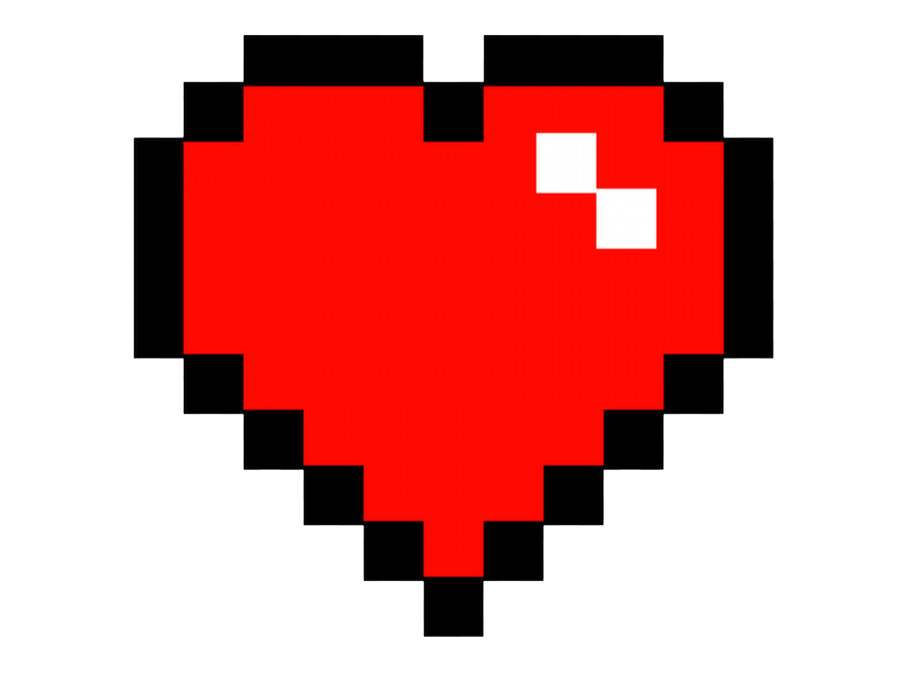
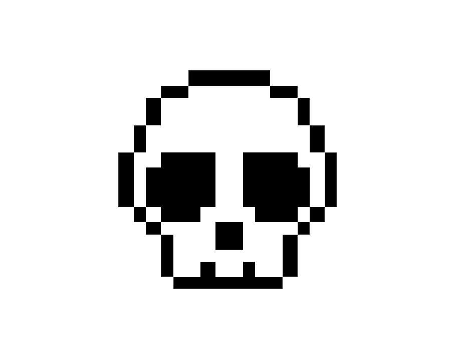

| SOBRE | HABILIDADES | FORTITUDE | DIFICULDADE |
|---|---|---|---|
| É o primeiro boss do jogo, fica localizado a direita das profundezas de dirthmount | seus padrões de ataques são simples e faceis de decorar. não caia no bait após abatelo, pois o mesmo evoca diversas mosquinhas de sua barriga. |  |  |